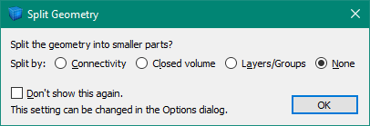
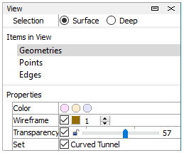
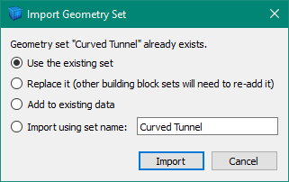
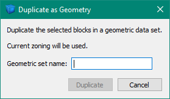

几何数据集
导入几何数据
几何数据文件可以导入块体集合中以供参考。兼容的文件类型有：.DXF、.STL 和 Itasca 的 .GEOM 文件。
标有“导入几何数据…”的工具按钮（）会显示一个导入对话框，您可以在其中选择要加载的几何数据文件。选择文件后，根据选项对话框中的某个设置，您可能会看到一个询问是否将几何体拆分为更小部分的对话框（编辑注：此处前面应有一个链接，指向描述块体构建选项的页面——但其中某个页面需要先编写完成！）。对于较大的几何集，拆分几何体可能很有用，因为这样一次只处理一个部分会更容易。


加载后，集合的名称会显示在视图控件组中。几何数据的外观（例如其颜色和透明度）可以在视图控件组中控制。


如果您尝试两次导入同一个文件，将看到“导入几何集”对话框，询问您如何解决该问题。


使用几何数据集
- 选中的块体构建对象（点、棱边、面、块体、控制点）可以捕捉到几何数据中的位置。捕捉可通过点到点捕捉或一维捕捉完成。
自动捕捉可以通过‘drape’命令完成。例如，您可以导入显示露天矿表面的几何数据集。您可以将块体构建模型设置在距该表面一定距离处，然后使用‘drape’命令将块体上的点以及控制点捕捉到该矿表面。
将块体复制到几何数据
可以将块体形状复制到几何数据集中。这样做的好处是随后可以对几何数据进行披覆。块体不会披覆到块体上。
选中一个或多个块体后，右键单击其中一个块体以显示上下文菜单。然后选择“复制为几何…”命令，将显示以下对话框。


如果您计划将块体披覆到曲线几何上，可能需要暂时关闭该对话框，以增加曲线棱边上的网格单元数。这将使几何数据和披覆更紧密地贴合曲线。
几何数据将被添加到您在对话框中命名的任意集合。该集合可以是新集合、现有集合，甚至是从文件导入的集合。
单击“复制”按钮后，几何数据应出现在块体构建窗格中。此时您可能需要右键单击选中的块体，并从上下文菜单中选择“隐藏所选块体”，以便更清楚地查看几何体。
| 这些内容对您有帮助吗？… | FLAC3D © 2019, Itasca | 原文更新于 2020 年 10 月 8 日 |